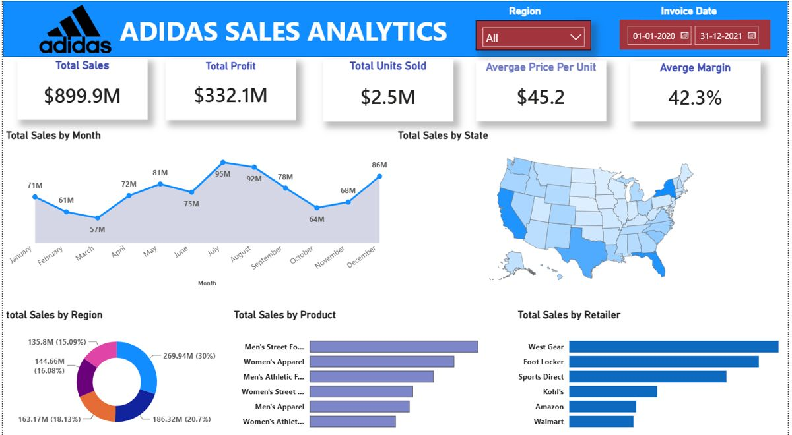

1. Business Problem
Adidas sells footwear and apparel through major omnichannel retail partners across the United States. Commercial managers lacked a single consolidated view to compare retailer profitability, seasonal demand spikes, and product category margins across all US states.
Key Business Questions
- Which retail partners generate the highest operating profit vs top-line volume?
- How does sales performance fluctuate between winter troughs and summer peaks?
- What are the top-performing product categories by margin percentage?
- Which states and sales methods (In-store, Outlet, Online) drive the most efficient margins?
2. Data Modelling & Star Schema
Built a robust star schema in Power BI with bidirectional relationships disabled to ensure unambiguous filter propagation.
FactSales
SaleID, DateKey, ProductID, RetailerID, StateID, UnitsSold, TotalSales, OperatingProfit
DimProduct
ProductID, Category, GenderSegment, PricePerUnit
DimRetailer
RetailerID, RetailerName, SalesMethod
DimGeography
StateID, State, Region, City
DimDate
Date, Month, Quarter, Year, Season
3. Key DAX Measures
// 1. Total Sales
Total Sales = SUM(FactSales[TotalSales])
// 2. Operating Profit
Operating Profit = SUM(FactSales[OperatingProfit])
// 3. Operating Profit Margin %
Operating Margin % =
DIVIDE(
[Operating Profit],
[Total Sales],
0
)
// 4. Units Sold
Total Units = SUM(FactSales[UnitsSold])
// 5. Average Price per Unit
Avg Selling Price =
DIVIDE([Total Sales], [Total Units], 0)4. Core Insights & Findings
Key Finding: West Gear emerged as the leading partner by total revenue ($242.9M). Peak monthly sales peaked in July ($95M) compared to a low in March ($57M). Footwear generated the highest volume, while Men's Apparel delivered the highest gross margin at 44.1%.

5. Business Recommendations
- Channel Allocation: Reallocate higher promotional budgets to West Gear and Foot Locker in Q2 to capture summer footwear demand.
- Discount Control: Protect the 42.3% operating margin by curbing heavy discounting on Men's Street Footwear where demand inelasticity was observed.
- Regional Strategy: Expand outlet and online distribution channels in lagging Southeast regions.